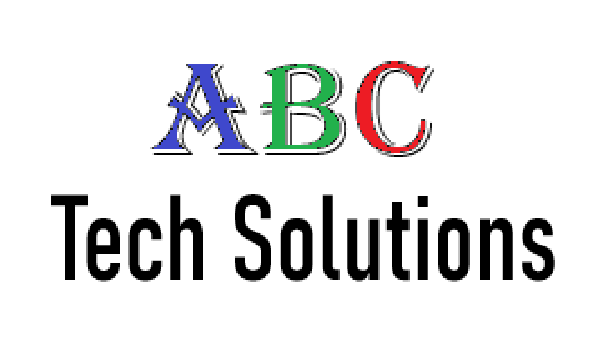

Job Position 1
- Position: Software Development Intern
- Company: ABC Tech Solutions
- Dates: June 2023 - August 2023
- Description: During my internship at ABC Tech Solutions, I worked on developing and optimizing web applications using JavaScript, HTML, and CSS. I collaborated with the development team to design user-friendly interfaces and improve application performance.
- Major Accomplishments:
- Improved the performance of a key web application by 30% through code optimization.
- Developed a new feature that enhanced user experience and increased user engagement by 20%.
- Reflection: This internship provided me with hands-on experience in web development and an understanding of industry standards. I learned the importance of writing clean, efficient code and the impact of user interface design on overall user satisfaction.
Job Position 2
- Position: Data Analyst Intern
- Company: XYZ Financial Services
- Dates: January 2023 - May 2023
- Description: As a Data Analyst Intern, I worked on analyzing large datasets to provide insights and support decision-making processes. I used Python and SQL to clean and analyze data, creating visualizations to communicate findings effectively.
- Major Accomplishments:
- Created a comprehensive dashboard that streamlined data reporting and reduced report preparation time by 40%.
- Identified key trends and patterns that helped improve the company's financial forecasting accuracy.
- Reflection: This role enhanced my data analysis skills and taught me how to derive meaningful insights from complex datasets. I gained experience in data visualization and improved my ability to communicate technical information to non- technical stakeholders.
Volunteer Position 1
- Position: Coding Mentor
- Organization: Code for Good
- Dates: September 2022 - December 2022
- Description: As a coding mentor, I volunteered to teach programming fundamentals to high school students. I conducted weekly sessions, helping students with their coding projects and encouraging them to pursue careers in technology.
- Major Accomplishments:
- Successfully mentored a group of 15 students, several of whom went on to participate in coding competitions.
- Developed a structured curriculum that improved students' understanding and retention of programming concepts.
- Reflection: Volunteering as a coding mentor was a rewarding experience that allowed me to share my knowledge and passion for technology with the next generation. I learned the importance of patience and adaptability in teaching, and the experience reinforced my desire to contribute to the tech community.